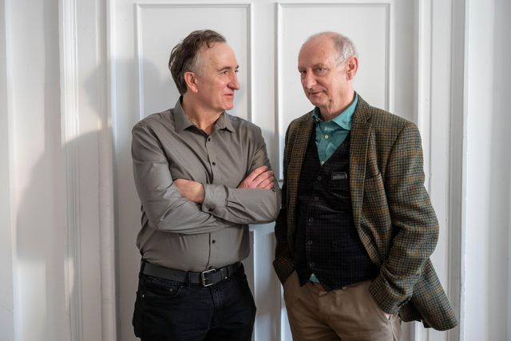
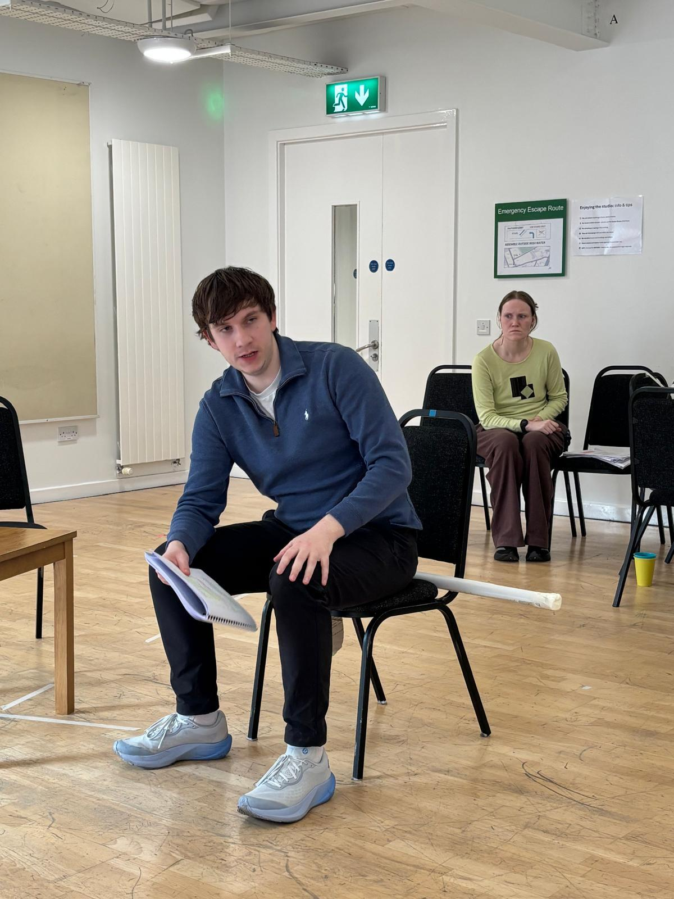
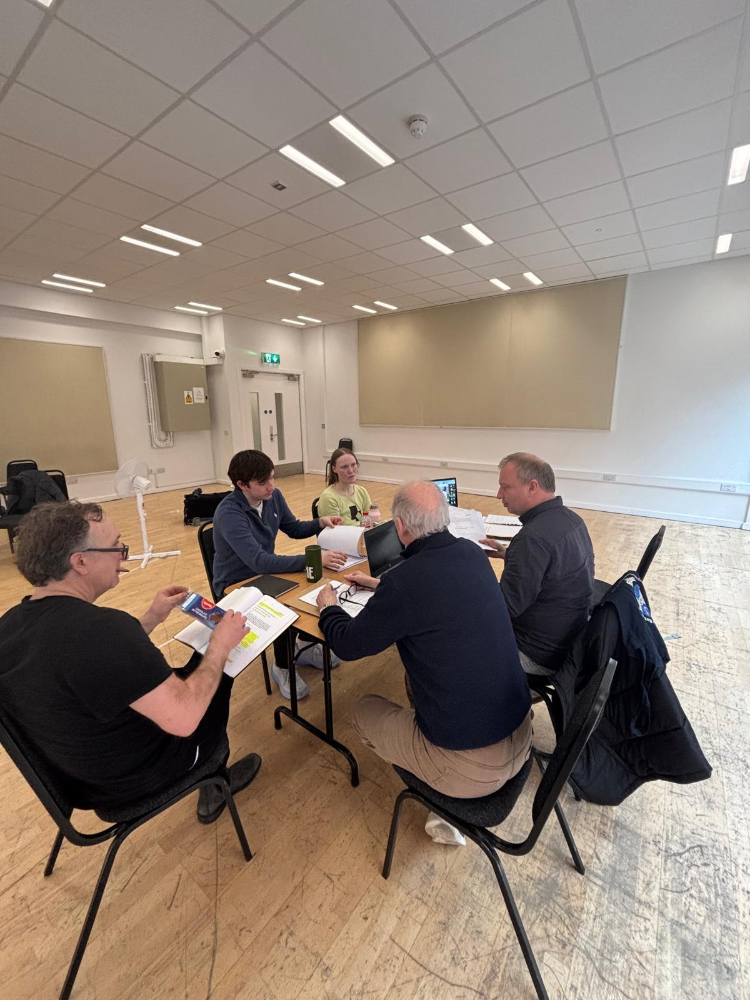
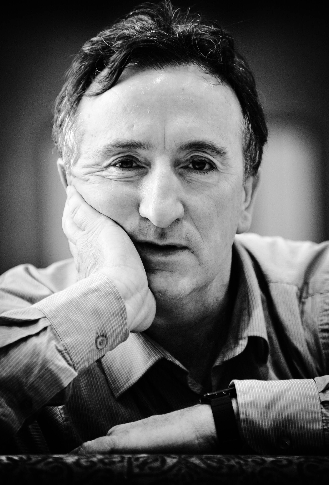
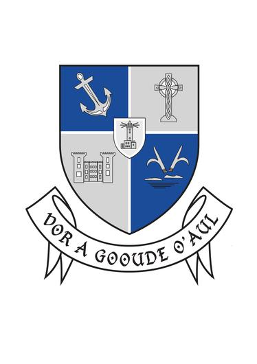

Gallery



DIRECTOR’S NOTES
Of Mornington by Billy Roche
We tell ourselves stories to survive. Stories about who we were, who we are, and who we might still become. Of Mornington lives in the space between those stories — and the truth.
This is a play about belief, identity, and the quiet, stubborn need for connection. However self-contained we appear, we are not built to endure alone. We need other people — to witness us, to challenge us, to keep us from disappearing into our own myths.
Set in a small-town café, three lives collide at a moment of reckoning. Each is searching for something — recognition, stability, meaning — and each resists the very connection that might offer it. What unfolds is a darkly funny, deeply human portrait of people caught between who they’ve been and who they might yet be.
This production embraces the play’s restraint. It is actor-led, allowing tension to surface through silence, proximity, and what remains unsaid. The café becomes both refuge and pressure point — a shared space where small shifts carry real consequence, and where connection hovers, just within reach.
Billy Roche’s writing is grounded in a deep trust in actors and in the fragile, vital connections between people. My own journey with Billy began ten years ago when he took a chance on me — as he has done for so many Wexford actors, including Gary Lydon, Aidan Gillen, and Dermot Murphy. Without that belief, I would not be writing these words.
I remain profoundly grateful for his generosity, and for the trust that continues to shape this work.
Peter McCamley.
Writers notes
‘That play is not earning its keep,’ my mother once said to me. ‘You need to roll up your sleeves and move it forward on the shelf,’ she said as if I was running a little corner shop full of plays. ‘THE WEXFORD TRILOGY, ‘she emphasised,’ doesn’t owe you anything, but as for that other yoke…. No, it’s not earning its keep.’ (She was talking about AMPHIBIANS which had just premiered at the RSC but hadn’t had an Irish production yet; and yes, I did, I rolled up my sleeves and made it happen.)
‘OF MORNINGTON- my rarely performed, neglected play- is not earning its keep,’ I said to myself one dreary day as my mother’s loving, heavenly voice rang in my ears; and that’s what propelled me to send the play to Gary Lydon whose company Gary Lydon Productions set up a rehearsed reading in the Dock Art Centre in Carrig-on- Shannon. And- in short- that is what has led us all here. Ad Personam came on board to co-produce and Peter McCamley stepped up to the plate to direct and, leaving out – sparing you- the slog of what it takes to get a production up on its feet, here we are.
And what about OF MORNINGTON, what’s it made of? Well, you take a pinch of salt (the Greek myth of Philoctetes), a little hint of pepper (the western SHANE); add a spoonful of vinegar (Paul Newman’s The Hustler) and temper it all with the poetic anger and energy of punk (Johnny Rotten/ Ian Dury), and you more or less have it - my carefully constructed handy little three hander which would surely set my mother scratching her head in wonder at its lack of earning power ( yes, the phrase’ earning its keep’ should be taken literally.) Vinegar was my mother’s secret ingredient when she made her much-loved toffee apples (it binds the toffee together she said); Salt and pepper were seldom put on the table because they were already included in the cooking; Punk? (give me some credit). Speaking of salt and pepper and, indeed, vinegar: James Doherty O Brien and Siofra O Meara join Gary Lydon in the cast of three. Who is the salt and who is the pepper? I'll leave that to you. The vinegar is another matter!
And so, to conclude, I have moved the product from the shelf to the counter, within arm’s reach you might say; all you have to do now is just… pick it up and eat it!
Billy Roche.
April 2026.
About Billy Roche
Billy Roche is best known for his stage plays The Wexford Trilogy, Amphibians, On Such As We, The Cavalcaders and Lay Me Down Softly along with the film Trojan Eddie, the novel Tumbling Down, his acclaimed collection of short stories Tales From Rainwater Pond and the RTE four part series CLEAN BREAK. He is a member of Aosdana.
Billy Roche's first novel, Tumbling Down, was published in 1986. His first stage play, A Handful Of Stars, was staged at The Bush Theatre, London in 1988. This was followed by Poor Beast In The Rain in 1990. Belfry completed this powerful trilogy for the Bush Theatre. All three plays, directed by Robin Le Fevre, became known as the Wexford Trilogy and were performed in their entirety at The Bush, the Peacock and the Theatre Royal, Wexford, now the National Opera House, Wexford. Later the Wexford Trilogy was filmed for the B.B.C. His fourth play Amphibians was commissioned by the Royal Shakespeare Company. This was followed by The Cavalcaders at The Peacock and Royal Court, London.
He wrote the screenplay for Trojan Eddie, which was directed by Gillies MacKinnon and starred Stephen Rea and Richard Harris. On Such As We was performed at the Peacock in 2001. Tales From Rainwater Pond, his collection of short stories was published by Pillar Press in 2006. Lay Me Down Softly, his 7th play, was originally performed at the Peacock Theatre in 2008, directed by Wilson Milam. A Love Like That was produced by Decadent Theatre at The National Opera House, Wexford and The Civic Theatre, Dublin. Billy’s plays are published by Nick Hern Books.
The Eclipse, a film that was co-written with Conor McPherson won an IFTA Award for Best Screenplay and Best Film, directed by Conor McPherson. The film is inspired by Billy’s short story Table Manners (from the Tales From Rainwater Pond collection). His short novella The Diary Of Maynard Perdu was performed on stage by Peter McCamley at the Wexford Arts Centre, the Mill Theatre and Smock Alley, Dublin. He wrote the screenplay Clean Break for RTE television.
His plays are constantly revised and reproduced - Lay Me Down Softly (The Tricycle Theatre, London and The Seanachai Theatre, Chicago). The Cavalcaders (Druid); On Such As We (Decadent Theatre); A Handful Of Stars (Four Rivers Theatre). Billy Roche is a member of Aosdana.
About Peter McCamley
Peter is a theatre director, producer, actor, and educator with over 23 years of experience in the performing arts. Co-founder of Menapia Theatre Company and Ad Personam Cultural Events Ltd, he has created numerous productions and cultural festivals across Ireland and the UK, including the Castle-Lake Arts Festival (Johnstown Castle Estate), Billy Roche's The Diary of Maynard Perdu, and the ongoing Christmas by Candlelight series produced by Lyric Opera.
His directing work includes Shakespeare's The Tempest, Twelfth Night, and A Midsummer Night's Dream, alongside contemporary pieces by David Mamet, Oscar Wilde, and Ariel Dorfman at American College Dublin. Peter has also directed for Dublin City Council's Opera in the Open and served as actor trainer for Wexford Festival Opera.
As a performer, recent credits include Puck in A Midsummer Night's Dream (Wexford Festival Opera 2025), Maynard Perdu in The Diary of Maynard Perdu (Smock Alley Theatre), Captain Von Trapp in The Sound of Music (National Concert Hall), and roles in Wexford Festival Opera's Impossible Interviews series.
Other notable work includes Ariel in the Royal Shakespeare Company's The Tempest, performing with the Blueman Group in New York and acting on RTE in Clean Sweep. Peter holds an MFA in Performance (First Class Honours) from American College Dublin and a BA Hons in Acting from Rose Bruford College. He trained at Stratford-Upon-Avon College in collaboration with the Royal Shakespeare Company and studied Method Acting in London. Peter has trained Actors from all ages and abilities including lecuturing in BA and MFA Performing Arts and Acting degrees, and Saturday moning Drama club. He also works as a teaching artist with Music Generation Wexford, continuing to foster artistic excellence across performance and education.

About Gary Lydon
Gary has a long association with Billy Roche, appearing in many of his plays, including A Handful of Stars, Poor Beast in the Rain, Belfry, The Cavalcaders and Lay Me Down Softly (all world premieres). Other theatre credits include Hangmen, The Pillowman, The Weir and Borstal Boy (Gaiety Theatre), Playboy of The Western World (Old Vic and Druid), Waiting For Godot (Gare St. Lazare), The Cripple of Inishmann (National Theatre, London); Drumbelly, The House, Translations, A Whistle in The Dark (Abbey Theatre), Sive and Tinker's Wedding/Well of the Saints (Druid).
Gary will be seen later this year playing Elvis impersonator Gerry Byrne in the upcoming feature film One Sweet Hour, written by Eugene O'Brien and directed by Declan Recks, produced by Samson Films. Other screen credits include Trespasses (Channel 4), Bodkin( Netflix), The Banshees of Inisherin, Lakelands, Barber, Broken Law, The Guard, Calvary, Pure Mule and The Clinic.
Gary's production credits through his company, Gary Lydon Productions, include his own adaptation of A Christmas Carol, which he also directed; a Halloween Tour of Carrick on Shannon, and public rehearsed readings of Of Mornington, Mountain Outta Mohill, The Monday Boy and Lakes (all Dock Arts Centre).

About James Doherty O’Brien
Mike will be played by James Doherty O'Brien. James is a Theatre Studies and English Literature graduate from Trinity College, Dublin, and has appeared in numerous productions as part of his studies. He played Des in the acclaimed production of A Whistle in the Dark by Tom Murphy at the Abbey Theatre, starring Sean McGinley and Brian Gleeson. James wrote, directed, produced, and performed the lead role in his one-person show, Your Heart is an Empty Room, as part of the Scene + Heard Festival 2025 at Smock Alley Theatre, and later at The Dock in Carrick-on-Shannon. He is also an accomplished guitarist, singer, and songwriter, and a former member of the rock band The Flies. His screen credits include the film Lakelands and the AMC series Moonhaven, which recently landed on Netflix.

About Siofra O’Meara
Síofra O’Meara is a Dublin-based actor and writer. She recently wrapped on short film Bean directed by Hiram Harrington which will premiere in 2026. Her recent credits include Lesbian Lines, directed by Cara Holmes and produced by Keeper Pictures, and Blister, which she also wrote. Blister was directed by Simon Geaney at Project Arts Centre following its critically acclaimed run at Dublin Fringe.
Additional credits include Hand of God by Carly MaGee, Efficacy 84 by Luke Casserly, It Folds by Broken Talkers and JunkEnsemble, and Go Home, produced by Pale Rebel Productions. Síofra is currently developing the feature film Come and Be a Winner, produced by Deal Productions and Keeper Pictures, funded by Screen Ireland and the Luxembourg FilmFund, with a director to be announced.

Crew Credits
About Ad Personam
Ad Personam Cultural Events Ltd is a Wexford-based arts organisation co-founded by theatre director, producers, and educator Peter and Aileen McCamley. The company creates and produces high-quality theatre, music, and interdisciplinary cultural events that combine professional artistic practice with strong community engagement. Ad Personam’s work includes the Castle-Lake Arts Festival (2021), theatre productions such as A Midsummer Night’s Dream (2021) and By Billy Roche (2022), the short film Sequah by Billy Roche (2023), and the ongoing Christmas by Candlelight series. The company has also produced large-scale public and community events including BarnFest at St Mary’s GAA (2022), Bealtaine Festival Wexford (2023–2024), Murrintown Christmas Festival and Specials (2021–2025), and Filling the Well for Rosslare Strand Culture Night (2024–2025). In 2023, Ad Personam produced The Rosslare Song Project in partnership with Cruinniú na nÓg Wexford, alongside an extensive programme of collaborative work with Music Generation Wexford, including Everyone (2024), La/Oíche at Ceilúradh, Fleadh Cheoil na hÉireann (2024), Music Generation Educators Day – We Are Music Generation (2025), Bí Ann at Fleadh Cheoil na hÉireann (2025), and Back to the Festival (2025), an interactive music experience for young people created as part of Wexford Festival Opera. The company’s mission is to produce artistically ambitious, accessible work that places professional artists at the heart of communities, creating meaningful cultural experiences that are rooted in place while engaging with universal themes.
Links
Ad Personam Website
Peter McCamley Website
With thanks to:
Eoin Colfer, Councillor Lisa McDonald, Fitzgeralds Menswear Wexford, Councillor Catherine ‘Biddy’ Walsh, Rosemary Hartigan, Elizabeth Rose-Browne, Elizabeth Whyte and the staff at Wexford Arts Centre. In kind support by Wexford County Council Arts Department in association with Wexford Arts Centre.
Supporters & Partners
